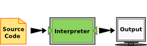

1.2. What is Python?¶
The programming language you will be learning is Python. Python is an example of a high-level language; other high-level languages you might have heard of are C++, PHP, and Java.
Two kinds of programs process high-level languages into low-level languages: interpreters and compilers. An interpreter reads a high-level program and executes it, meaning that it does what the program says. It processes the program a little at a time, alternately reading lines and performing computations.
A compiler reads the program and translates it completely before the program starts running. In this case, the high-level program is called the source code, and the translated program is called the object code or the executable. Once a program is compiled, you can execute it repeatedly without further translation.

Many modern languages use both processes. They are first compiled into a lower level language, called byte code, and then interpreted by a program called a virtual machine. Python uses both processes, but because of the way programmers interact with it, it is usually considered an interpreted language.
There are three ways to use the Python interpreter: shell mode, program mode and the IPython/Jupyter notebook. In shell mode, you type Python expressions into the Python shell or IPython shell, and the interpreter immediately shows the result. The shell has many the advantages, including direct and immediate interaction with our data. Furthermore, we can work with a shell in our programming environment, often called an Integrated Development Environment (IDE), or on a remote session with a server.
IPython and Jupyter
The name(s) for the IPython tools are currently in transition. Ipython was originally written with Python as the sole focus, but it was quickly recognized that this framework works well with many languages. Recently, IPython was split into two parts, Jupyter and Ipython proper. Project Jupyter includes all of the machinery that is used to make shells and notebooks, allowing easy creation of tools in other language. Ipython contains the Python-specific interface with Jupyter. Because this name change is relatively new, there can be some confusion on naming, so be aware the “Ipython” might refer to wither or both of Jupyter and Ipython.
1.2.1. A Typical First Program¶
Traditionally, the first program written in a new language is called Hello, World! because all it does is display the words, Hello, World! In Python, the source code looks like this.
print("Hello, World!")
This is an example of using the print function, which doesn’t actually print anything on paper. It displays a value on the screen. In this case, the result is the phrase:
Hello, World!
Here is the example in activecode. Give it a try!
Note
The quotation marks in the program mark the beginning and end of the value. They don’t appear in the result.
Some people judge the quality of a programming language by the simplicity of the Hello World program. By this standard, Python does about as well as possible.
When working with data, it is natural to work interactively, e.g. execute a
command or two and then observe the outcome. To aid in exploring data
interactively, we will be using python packages Jupyter and Ipython for this
purpose. Below you see the output of evaluating and printing "Hello,
World!".
In [1]: "Hello, World!"
In [1]: print("Hello, World!")
Notice that when we type a value such as "Hello, World!" and press enter,
python returns the value, which we could save for later. On the other hand, the
print function has no output. This is due to the fact that print sends its
output to the operating system (and not Python).
Consequently, we don’t need the print statements when working interactively, and in fact, print statements can be a common source of errors for programmers that are new to python.
Caution
You should try to limit the use of print statements in your code. In the
interactive code blocks in the book, we are forced to use print to see
the output of our code, but you should try to limit your use of the
print function.
When to use print
Use print ...
- as a temparary debugging toy. In this case, the print calls should be removed after the bugs are fixed.
- when writing python shell scripts that interact with other programs (We will show examples of this techniques later in the book.)
- To log information to a file. This is a useful development tool, but will not play a role in this book.
Check your understanding
-
intro-12-1: The print function:
- (A) sends information to the printer to be printed on paper.
- Within the Python programming language, the print function has nothing to do with the printer.
- (B) displays a value on the screen.
- Yes, the print function is used to display the value of the thing being printed.
- (C) tells the computer to put the information in print, rather than cursive, format.
- The format of the information is called its font and has nothing to do with the print function.
- (D) tells the computer to speak the information.
- That would be a different function.
1.2.2. Comments¶
As programs get bigger and more complicated, they get more difficult to read. Formal languages are dense, and it is often difficult to look at a piece of code and figure out what it is doing, or why. For this reason, it is a good idea to add notes to your programs to explain in natural language what the program is doing. These notes are called comments.
A comment in a computer program is text that is intended only for the human reader - it is completely ignored by the interpreter. In Python, the # token starts a comment. The rest of the line is ignored. Here is a new version of Hello, World!.
Notice that when you run this program, it still only prints the phrase Hello, World! None of the comments appear. You’ll also notice that we’ve left a blank line in the program. Blank lines are also ignored by the interpreter, but comments and blank lines can make your programs much easier for humans to parse. Use them liberally!
Check your understanding
-
intro-12-2: What are comments for?
- (A) To tell the computer what you mean in your program.
- Comments are ignored by the computer.
- (B) For the people who are reading your code to know, in natural language, what the program is doing.
- The computer ignores comments. It's for the humans that will "consume" your program.
- (C) Nothing, they are extraneous information that is not needed.
- Comments can provide much needed information for anyone reading the program.
- (D) Nothing in a short program. They are only needed for really large programs.
- Even small programs benefit from comments.
Note
This workspace is provided for your convenience. You can use this activecode window to try out anything you like.